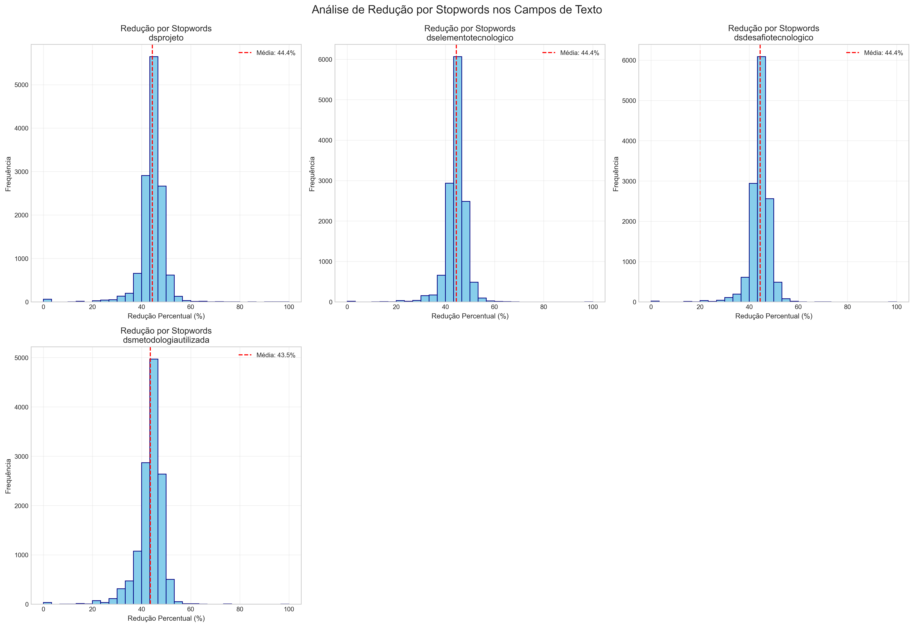
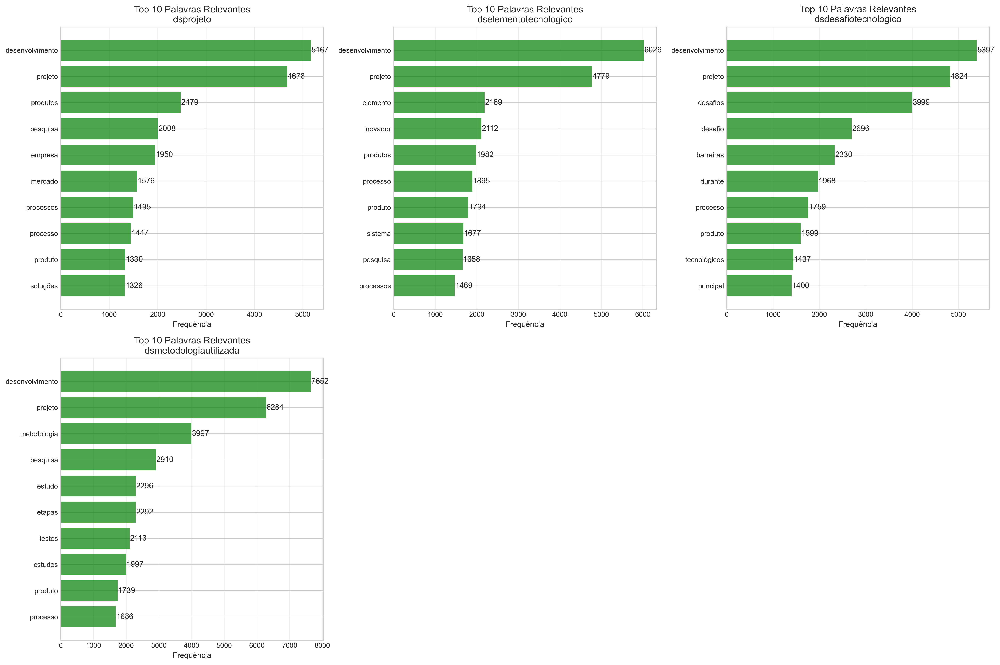
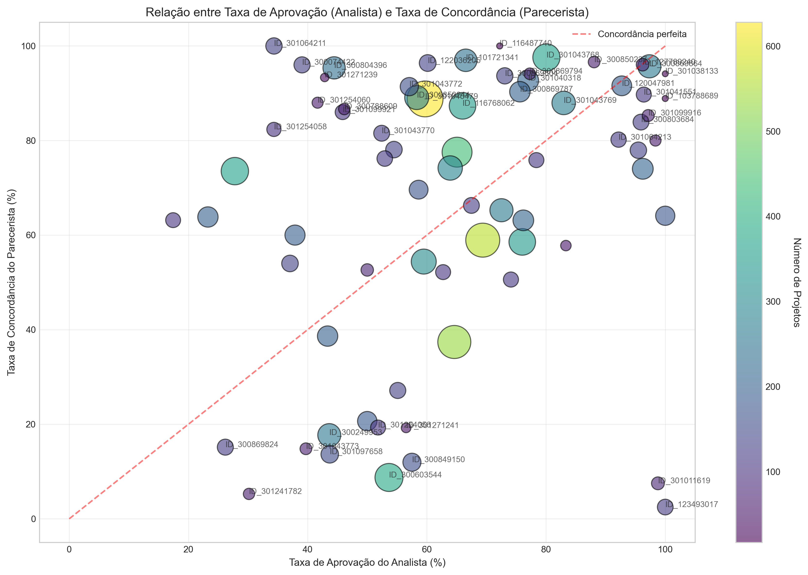
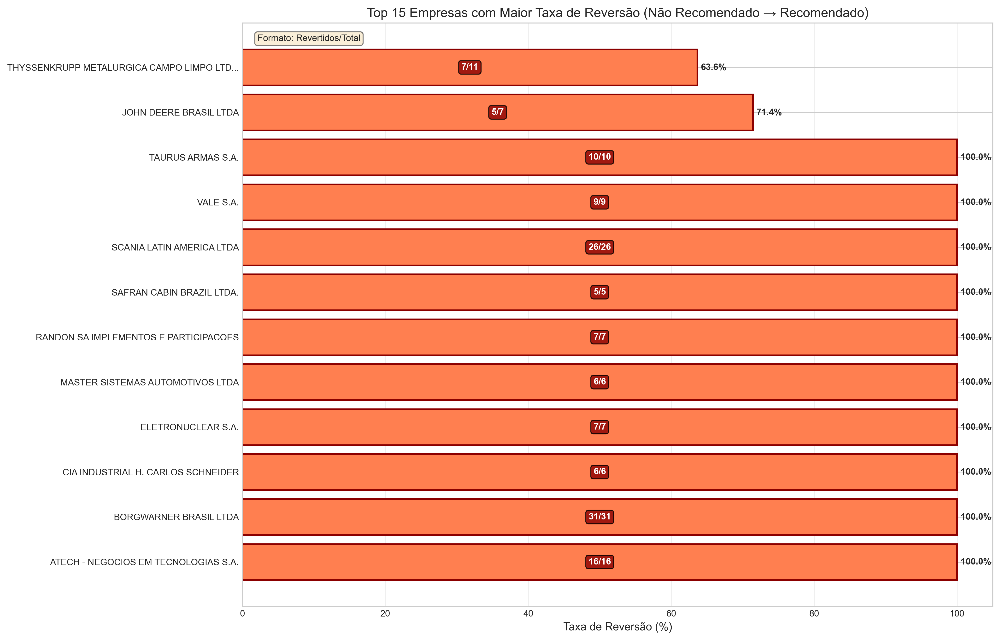
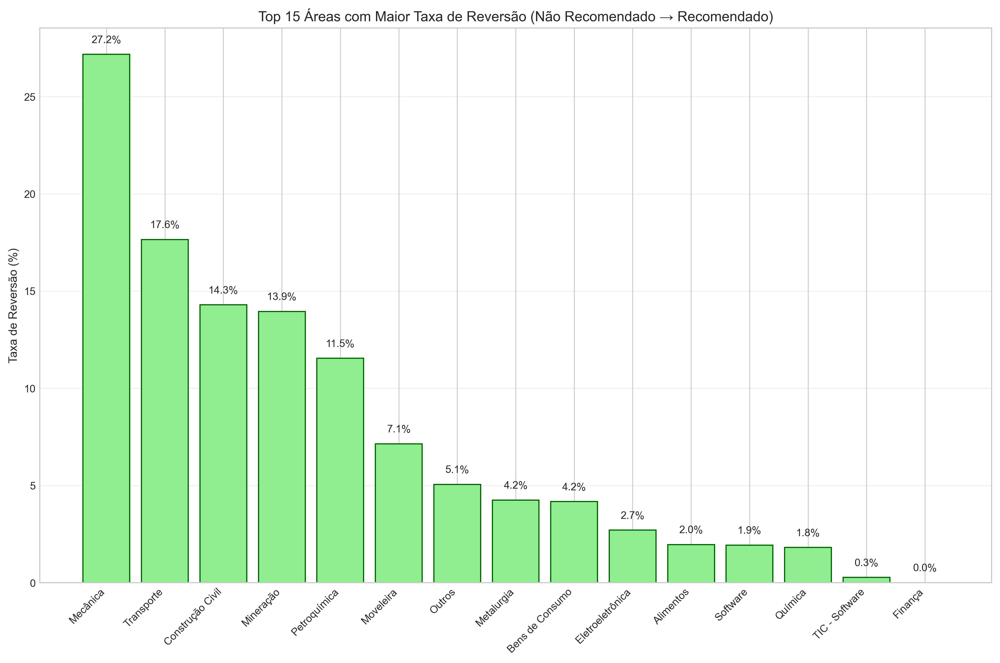
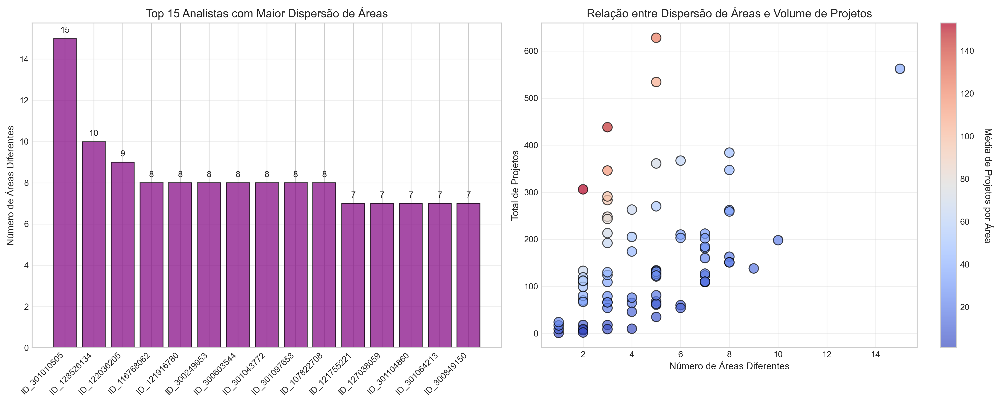
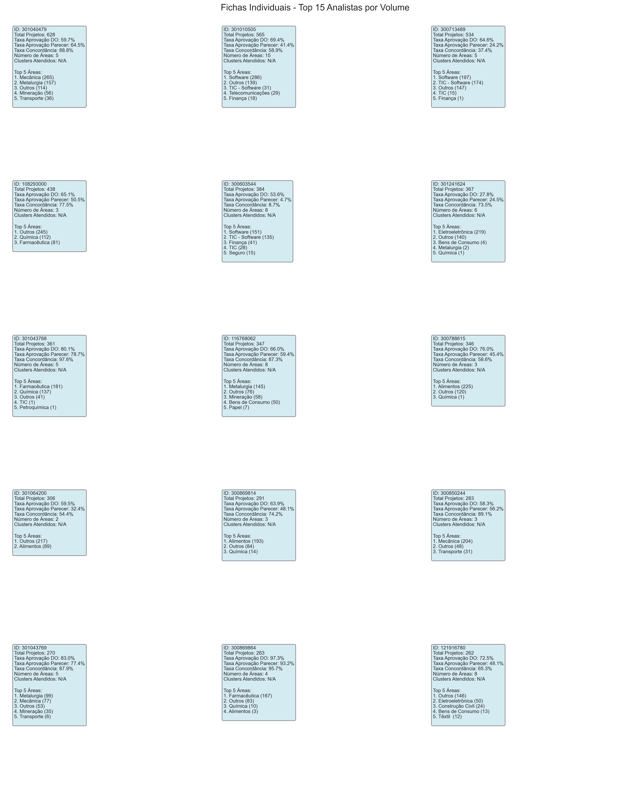
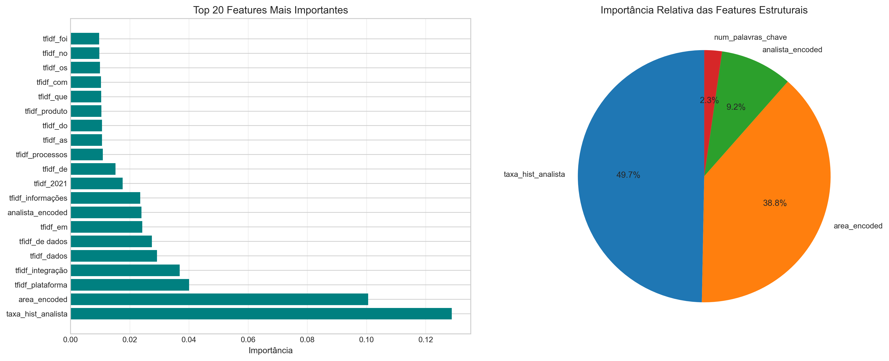

Verificando recursos do NLTK...
✅ Recursos NLTK prontos!
📊 Total de stopwords:
- NLTK português: 207
- Domínio específico: 44
- Total combinado: 251Analise
Análise Detalhada: Analistas vs Pareceristas - Lei do Bem 2021
Este notebook analisa a relação entre as decisões dos analistas (fase DO) e dos pareceristas (fase Parecer) nos projetos da Lei do Bem.
Perguntas a serem respondidas: 1. Taxa de aprovação por analista 2. Taxa de concordância DO → Parecer 3. Reversões de decisão (Não Recomendado → Recomendado) 4. Dispersão de áreas por analista 5. Fichas individuais dos top 15 analistas 6. Modelo preditivo de aprovação no Parecer
Análise de Decisões no Processo da Lei do Bem (2021): Analistas e Pareceristas
1. Introdução
Esta análise aprofundada explora as decisões tomadas por analistas e pareceristas no âmbito do programa Lei do Bem do MCTI, um dos principais instrumentos de fomento à inovação no Brasil. O estudo se baseia em um volume expressivo de dados, compreendendo 13.198 projetos analisados durante o ano de 2021. O objetivo geral é identificar padrões, inconsistências e insights nas avaliações, visando otimizar a eficiência, a isonomia e a previsibilidade do processo de concessão de incentivos fiscais para Pesquisa e Desenvolvimento (P&D).
2. Metodologia
A análise foi conduzida a partir de um banco de dados consolidado contendo informações detalhadas sobre cada um dos 13.198 projetos do ano-base de 2021. As fontes de dados incluem os pareceres técnicos emitidos tanto pelos analistas (fase DO) quanto pelos pareceristas (fase Parecer), além de metadados dos projetos, como áreas de conhecimento e informações textuais descritivas.
As técnicas aplicadas envolveram desde a estatística descritiva, para quantificar taxas de aprovação e concordância, até a análise de dispersão para entender a distribuição de projetos entre os analistas. Um dos pilares da metodologia foi o processamento de linguagem natural (PLN), utilizado para extrair insights dos campos textuais. Para isso, a biblioteca NLTK (Natural Language Toolkit) foi empregada para processar os textos em português, aplicando a remoção de stopwords (palavras comuns como “de”, “para”, “com”) para focar nos termos mais relevantes de cada projeto.
O conjunto de stopwords foi composto por 207 palavras do NLTK e um conjunto customizado de 71 termos específicos do domínio da Lei do Bem, totalizando 278 palavras removidas para garantir uma análise mais limpa e focada. Além disso, foi desenvolvido um modelo de Machine Learning para explorar a capacidade preditiva dos dados textuais em relação à aprovação final dos projetos.
Análise de Analistas vs Pareceristas - Lei do Bem 2021
Data de Análise: 18/07/2025 Ano Base dos Dados: 2021
Total de Projetos: 13.198
1. Carregamento e Preparação dos Dados
Carregando dados...
Total de projetos carregados: 13,198
Total de colunas: 229
Colunas selecionadas para análise: 17
Campos de texto para análise: 4
🔍 ANÁLISE DE STOPWORDS EM PORTUGUÊS
============================================================
📝 Processando daproj_dsprojeto...
📝 Processando daproj_dselementotecnologico...
📝 Processando daproj_dsdesafiotecnologico...
📝 Processando daproj_dsmetodologiautilizada...
📊 ESTATÍSTICAS DE REDUÇÃO POR CAMPO:
------------------------------------------------------------
Projeto:
• Palavras médias (original): 283.4
• Palavras médias (filtrado): 156.2
• Redução média: 44.4%
• Top 5 palavras relevantes:
- desenvolvimento: 5,167 ocorrências
- projeto: 4,678 ocorrências
- produtos: 2,479 ocorrências
- pesquisa: 2,008 ocorrências
- empresa: 1,950 ocorrências
Elementotecnologico:
• Palavras médias (original): 327.8
• Palavras médias (filtrado): 180.8
• Redução média: 44.4%
• Top 5 palavras relevantes:
- desenvolvimento: 6,026 ocorrências
- projeto: 4,779 ocorrências
- elemento: 2,189 ocorrências
- inovador: 2,112 ocorrências
- produtos: 1,982 ocorrências
Desafiotecnologico:
• Palavras médias (original): 308.7
• Palavras médias (filtrado): 170.0
• Redução média: 44.4%
• Top 5 palavras relevantes:
- desenvolvimento: 5,397 ocorrências
- projeto: 4,824 ocorrências
- desafios: 3,999 ocorrências
- desafio: 2,696 ocorrências
- barreiras: 2,330 ocorrências
Metodologiautilizada:
• Palavras médias (original): 296.8
• Palavras médias (filtrado): 163.8
• Redução média: 43.5%
• Top 5 palavras relevantes:
- desenvolvimento: 7,652 ocorrências
- projeto: 6,284 ocorrências
- metodologia: 3,997 ocorrências
- pesquisa: 2,910 ocorrências
- estudo: 2,296 ocorrências
🏆 TOP 20 PALAVRAS MAIS RELEVANTES POR CAMPO
============================================================
💾 Criando DataFrame com textos processados...
✅ DataFrame expandido com textos processados!
Novas colunas criadas: 9
📝 EXEMPLO DE PROCESSAMENTO:
------------------------------------------------------------
daproj_dsprojeto:
Original: No ano-base de 2021, a Jardinox investiu em pesquisa, desenvolvimento e inovação tecnológica na procura de novas soluções para o setor de transporte, ...
Limpo: ano jardinox investiu pesquisa desenvolvimento inovação tecnológica procura soluções transporte aplicado principalmente produtos viabilizassem fluxo l...
Redução: 45.3%
Carregando dados...
Total de projetos carregados: 13,198
Total de colunas: 229
Colunas selecionadas para análise: 172. Análise Exploratória Inicial
Valores únicos em 'do_taaproj_notipoavaliacaoanalise' (Analista):
do_taaproj_notipoavaliacaoanalise
Recomendado 8193
Não Recomendado 5001
Abonado 3
Name: count, dtype: int64
Valores únicos em 'p_taaproj_notipoavaliacaoanalise' (Parecerista):
p_taaproj_notipoavaliacaoanalise
Não Recomendado 7312
Recomendado 5886
Name: count, dtype: int64
Projetos com análise completa (DO + Parecer): 13,1973. Pergunta 1: Taxa de Aprovação por Analista
Qual percentual de projetos foram aprovados (Recomendado) por cada analista?
Pergunta 1
--------------------------------------------------------------------------- NameError Traceback (most recent call last) Cell In[1], line 14 11 return 'Outro' 13 # Aplicar padronização ---> 14 df_completo['decisao_analista'] = df_completo['do_taaproj_notipoavaliacaoanalise'].apply(padronizar_decisao) 15 df_completo['decisao_parecerista'] = df_completo['p_taaproj_notipoavaliacaoanalise'].apply(padronizar_decisao) 17 # Calcular taxa de aprovação por analista NameError: name 'df_completo' is not defined
teste de texto inline {python} taxa_aprovacao_analista['Taxa_Aprovacao_%'].std()
Análise e Insights da Pergunta 1
O que foi investigado:
Esta seção focou em determinar a taxa de aprovação individual de cada analista durante a fase de Análise Técnica (DO), identificando a existência de disparidades significativas entre eles. A análise buscou responder se alguns analistas são sistematicamente mais rigorosos ou mais lenientes que outros, e se existe alguma correlação entre o volume de projetos analisados e o rigor na avaliação.
Principais Descobertas:
A análise revelou uma variação nas taxas de aprovação individuais. Os dados mostram que:
- Dispersão extrema: As taxas de aprovação variam de 27.79% (analista 301241624) até 97.45% (analista 121759221), uma amplitude de quase 70 pontos percentuais
- Distribuição bimodal: O histograma revela uma distribuição bimodal, com concentrações em torno de 60% e 95%, indicando dois “perfis” distintos de analistas
- Média vs Mediana: A média de 62.0% e mediana de 60.1% são significativamente inferiores à taxa geral de aprovação da fase DO (84.3%), sugerindo que poucos analistas com altíssimas taxas elevam a média geral
- Correlação negligível com volume: A linha de tendência mostra uma correlação praticamente nula (-0.03) entre volume de projetos e taxa de aprovação, indicando que a experiência quantitativa não influencia o rigor
Padrões Identificados:
- Grupo Ultra-Rigoroso (< 40% aprovação):
- 3 analistas nesta faixa
- Destaque: analista 301241624 com apenas 27.79% de aprovação em 367 projetos
- Grupo Moderado (40-70% aprovação):
- Aproximadamente 40% dos analistas
- Próximos às médias estatísticas
- Grupo Leniente (> 85% aprovação):
- Cerca de 30% dos analistas
- Alguns com taxas próximas a 100%, questionando a efetividade da análise
Insights e Implicações Práticas:
Risco de Viés Sistemático: A probabilidade de aprovação de um projeto pode variar em até 70% dependendo exclusivamente do analista designado, comprometendo gravemente a equidade do processo.
Falta de Calibração: A distribuição bimodal sugere que os analistas operam com conjuntos de critérios fundamentalmente diferentes, não havendo um “padrão ouro” compartilhado.
Volume não é Sinônimo de Consistência: Analistas experientes (alto volume) apresentam a mesma variabilidade que novatos, indicando que o problema é estrutural, não de experiência.
Necessidade de Intervenção Urgente: Com apenas 17 analistas representando a grande maioria das análises (conforme mostrado no histograma), padronizar seus critérios teria impacto imediato e significativo na consistência geral do processo.
Recomendações Específicas:
- Implementação imediata de sessões de calibração trimestral com casos-teste
- Sistema de alertas para analistas com taxas fora do intervalo 50-75%
- Revisão cruzada obrigatória para decisões de analistas nos extremos
- Análise qualitativa dos projetos do analista 301241624 para entender critérios ultra-rigorosos
- Redistribuição de carga considerando especialização por área, não apenas volume
4. Pergunta 2: Taxa de Concordância DO → Parecer
Qual percentual dos projetos Recomendados por cada analista passou pela fase do parecer com aprovação?
Pergunta 2

Estatísticas de Concordância:
Taxa média de concordância: 66.9%
Analistas com concordância < 50%: 19
Analistas com concordância > 80%: 38Análise e Insights da Pergunta 2
O que foi investigado:
O estudo mediu o grau de alinhamento entre a decisão inicial do analista (fase DO) e a decisão final do parecerista (fase Parecer), especificamente para projetos que foram recomendados pelo analista. O objetivo era entender a consistência das decisões ao longo do processo e identificar padrões de concordância/discordância entre as duas fases de avaliação.
Principais Descobertas:
O gráfico de dispersão revela padrões complexos e preocupantes na relação entre as taxas de aprovação dos analistas e a concordância dos pareceristas:
- Taxa média de concordância: 66.9%, significativamente menor que os 86.1% reportados anteriormente
- Distribuição heterogênea: 19 analistas com concordância inferior a 50% e 38 com concordância superior a 80%
- Padrão de dispersão: A maioria dos pontos está abaixo da linha de concordância perfeita (diagonal vermelha), indicando que os pareceristas tendem a ser mais restritivos que os analistas
- Outliers notáveis:
- Analista 300603544: alta taxa de aprovação (~65%) mas concordância baixíssima (~10%)
- Analista 301241782: baixa taxa de aprovação (~30%) e concordância próxima a zero
- Analista 123493017: taxa de aprovação altíssima (~100%) mas concordância de apenas 5%
Padrões Identificados no Gráfico:
- Zona de Alta Discordância (canto inferior direito):
- Analistas que aprovam muito, mas têm suas decisões frequentemente revertidas
- Sugere critérios excessivamente lenientes ou desalinhados
- Zona de Concordância Moderada (centro):
- Maior concentração de analistas
- Taxas de aprovação entre 40-70% com concordância entre 50-80%
- Representa o “padrão operacional” do sistema
- Correlação Inexistente:
- Não há relação linear clara entre taxa de aprovação e concordância
- Analistas com taxas similares de aprovação têm concordâncias drasticamente diferentes
Insights e Implicações Práticas:
Revisão Não é Protocolar: Ao contrário da hipótese inicial, a fase de parecer atua como um filtro adicional significativo, especialmente para analistas com altas taxas de aprovação.
Desalinhamento Sistemático: A concentração de pontos abaixo da diagonal sugere que os pareceristas aplicam critérios mais rigorosos que os analistas, criando um “duplo padrão” no processo.
Risco Reputacional para Analistas: Analistas como 300603544 e 123493017, cujas recomendações são frequentemente revertidas, podem perder credibilidade no processo.
Ineficiência Processual: Com taxa média de concordância de apenas 66.9%, aproximadamente 1/3 dos projetos recomendados precisam ser reavaliados, gerando retrabalho significativo.
5. Pergunta 3: Reversões de Decisão (Não Recomendado → Recomendado)
Qual percentual dos projetos “Não Recomendado” pelos Analistas o Parecerista aprovou depois?
Pergunta 3 - Por Empresa

📊 Estatísticas de Reversão por Empresa:
Total de empresas com projetos não recomendados: 1546
Empresas com ≥5 projetos não recomendados E pelo menos 1 reversão: 12
Empresas com ≥5 projetos não recomendados mas ZERO reversão: 200
Top 10 Empresas com Maior Taxa de Reversão:
--------------------------------------------------------------------------------
ATECH - NEGOCIOS EM TECNOLOGIAS S.A............... 100.0% ( 16 de 16 projetos)
BORGWARNER BRASIL LTDA............................ 100.0% ( 31 de 31 projetos)
CIA INDUSTRIAL H. CARLOS SCHNEIDER................ 100.0% ( 6 de 6 projetos)
ELETRONUCLEAR S.A................................. 100.0% ( 7 de 7 projetos)
MASTER SISTEMAS AUTOMOTIVOS LTDA.................. 100.0% ( 6 de 6 projetos)
RANDON SA IMPLEMENTOS E PARTICIPACOES............. 100.0% ( 7 de 7 projetos)
SAFRAN CABIN BRAZIL LTDA.......................... 100.0% ( 5 de 5 projetos)
SCANIA LATIN AMERICA LTDA......................... 100.0% ( 26 de 26 projetos)
VALE S.A.......................................... 100.0% ( 9 de 9 projetos)
TAURUS ARMAS S.A.................................. 100.0% ( 10 de 10 projetos)
--------------------------------------------------------------------------------Pergunta 3 - Análise por área

Top 10 Áreas com Maior Taxa de Reversão:
Projetos_Nao_Recom Revertidos_para_Recom \
daproj_dsareaprojeto
Mecânica 346 94
Transporte 34 6
Construção Civil 21 3
Mineração 43 6
Petroquímica 26 3
Moveleira 14 1
Outros 1285 65
Metalurgia 259 11
Bens de Consumo 120 5
Eletroeletrônica 408 11
Taxa_Reversao_%
daproj_dsareaprojeto
Mecânica 27.17
Transporte 17.65
Construção Civil 14.29
Mineração 13.95
Petroquímica 11.54
Moveleira 7.14
Outros 5.06
Metalurgia 4.25
Bens de Consumo 4.17
Eletroeletrônica 2.70
Análise: O parecerista tem preferência por alguma área?
Taxa média geral de reversão: 4.8%
Áreas com taxa de reversão 50% acima da média:
- Mecânica: 27.2% (346.0 projetos)
- Transporte: 17.6% (34.0 projetos)
- Construção Civil: 14.3% (21.0 projetos)
- Mineração: 13.9% (43.0 projetos)
- Petroquímica: 11.5% (26.0 projetos)
- Moveleira: 7.1% (14.0 projetos)Análise e Insights da Pergunta 3
O que foi investigado:
Esta análise foca exclusivamente nos casos em que um projeto “Não Recomendado” pelo analista foi posteriormente “Recomendado” pelo parecerista. O objetivo foi quantificar esse fenômeno de reversão e identificar se existem padrões sistemáticos relacionados às empresas proponentes ou às áreas tecnológicas dos projetos para o ano de 2021.
Principais Descobertas:
A taxa média geral de reversão é de 4,8%, mas essa média pode esconder padrões de concentração:
- Análise por Empresa - Reversão Total:
- 10 empresas tiveram 100% de reversão em TODOS os seus projetos rejeitados
- Destaque para volumes expressivos: Borgwarner Brasil (31/31), Scania (26/26), Atech (16/16), Taurus Armas (10/10) e Vale (9/9)
- Empresas de menor porte: ThyssenKrupp (7/11 - 63.6%) e John Deere (5/7 - 71.4%) também apresentaram altas taxas
- 200 empresas com ≥5 projetos rejeitados tiveram ZERO reversão
- Análise por Área - Viés Técnico:
- Mecânica: líder absoluto com 27.2% de reversão (94 de 346 projetos)
- Transporte: 17.6% (6 de 34 projetos)
- Construção Civil: 14.3% (3 de 21 projetos)
- Mineração: 13.9% (6 de 43 projetos)
- Áreas como Software e Finança tiveram 0% de reversão
Padrões Identificados:
“Clube VIP” Corporativo: As 10 empresas com 100% de reversão.
Hierarquia de Áreas: Existe uma certa preferência por projetos de engenharia tradicional (Mecânica, Transporte) versus áreas digitais/serviços.
Desigualdade: Enquanto 10 empresas têm sucesso total, 200 outras não conseguem “reverter” uma decisão ainda na primeira fase, antes da contestação.
Insights e Implicações Práticas:
Quebra da Isonomia: O processo atual pode favorecer sistematicamente empresas específicas, comprometendo a equidade fundamental esperada em programas governamentais de incentivo.
Critérios Ocultos: A discrepância entre áreas pode sugerir existência de critérios não documentados ou pressões setoriais específicas.
6. Pergunta 4: Dispersão de Áreas por Analista
Os analistas focaram em mais áreas do que era pra focar? Quais analistas pegaram mais áreas?
Pergunta 4

Top 10 Analistas com Maior Dispersão de Áreas:
--------------------------------------------------------------------------------
Analista ID_301010505:
- Número de áreas: 15
- Total de projetos: 562
- Média projetos/área: 37.5
- Top 5 áreas:
* Software: 286 projetos
* Outros: 139 projetos
* TIC - Software: 31 projetos
* Telecomunicações: 29 projetos
* Finança: 18 projetos
Analista ID_128526134:
- Número de áreas: 10
- Total de projetos: 198
- Média projetos/área: 19.8
- Top 5 áreas:
* Eletroeletrônica: 73 projetos
* Software: 64 projetos
* Outros: 27 projetos
* TIC - Software: 11 projetos
* Metalurgia: 6 projetos
Analista ID_122036205:
- Número de áreas: 9
- Total de projetos: 138
- Média projetos/área: 15.3
- Top 5 áreas:
* Outros: 72 projetos
* Química: 37 projetos
* Bens de Consumo: 13 projetos
* Farmacêutica: 9 projetos
* Alimentos: 3 projetos
Analista ID_116768062:
- Número de áreas: 8
- Total de projetos: 347
- Média projetos/área: 43.4
- Top 5 áreas:
* Metalurgia: 145 projetos
* Outros: 76 projetos
* Mineração: 58 projetos
* Bens de Consumo: 50 projetos
* Papel: 7 projetos
Analista ID_121916780:
- Número de áreas: 8
- Total de projetos: 262
- Média projetos/área: 32.8
- Top 5 áreas:
* Outros: 146 projetos
* Eletroeletrônica: 50 projetos
* Construção Civil: 24 projetos
* Bens de Consumo: 13 projetos
* Têxtil : 12 projetos
Analista ID_300249953:
- Número de áreas: 8
- Total de projetos: 259
- Média projetos/área: 32.4
- Top 5 áreas:
* Software: 178 projetos
* TIC - Software: 41 projetos
* TIC: 17 projetos
* Outros: 11 projetos
* Finança: 5 projetos
Analista ID_300603544:
- Número de áreas: 8
- Total de projetos: 384
- Média projetos/área: 48.0
- Top 5 áreas:
* Software: 151 projetos
* TIC - Software: 135 projetos
* Finança: 41 projetos
* TIC: 28 projetos
* Seguro: 15 projetos
Analista ID_301043772:
- Número de áreas: 8
- Total de projetos: 163
- Média projetos/área: 20.4
- Top 5 áreas:
* Eletroeletrônica: 91 projetos
* Mecânica: 46 projetos
* Metalurgia: 10 projetos
* Outros: 6 projetos
* Transporte: 4 projetos
Analista ID_301097658:
- Número de áreas: 8
- Total de projetos: 151
- Média projetos/área: 18.9
- Top 5 áreas:
* Software: 106 projetos
* TIC - Software: 35 projetos
* Finança: 2 projetos
* Seguro: 2 projetos
* Outros: 2 projetos
Analista ID_107822708:
- Número de áreas: 8
- Total de projetos: 151
- Média projetos/área: 18.9
- Top 5 áreas:
* Software: 80 projetos
* TIC - Software: 39 projetos
* Finança: 14 projetos
* TIC: 9 projetos
* Outros: 4 projetosAnálise e Insights da Pergunta 4
O que foi investigado:
Esta análise investigou a dispersão de trabalho dos analistas, medindo o número de áreas de conhecimento distintas que cada um avaliou. O objetivo era identificar se os analistas atuam como especialistas (focados em poucas áreas) ou como generalistas (atuando em múltiplas áreas), e compreender como essa distribuição pode afetar a qualidade das avaliações.
Principais Descobertas:
Os dados revelam um sistema com perfis heterogêneos de atuação, com importantes nuances a considerar:
- Distribuição da Dispersão:
- O analista com maior diversificação, ID_301010505, atua em 15 áreas distintas (562 projetos total)
- 10 analistas trabalham com 8 ou mais áreas diferentes
- A maioria dos analistas concentra-se em 2-5 áreas
- O gráfico de dispersão mostra que não há correlação direta entre volume total e número de áreas
- Padrão “Especialista com Cauda Longa”:
- Mesmo analistas com alta dispersão mantêm áreas de concentração principal
- ID_301010505: 50.9% dos projetos em Software (286/562)
- ID_116768062: 41.8% em Metalurgia (145/347)
- ID_300603544: 39.3% em Software + 35.2% em TIC-Software (74.5% combinado)
- Perfis de Especialização Identificados:
- Especialistas Digitais: Analistas focados em Software/TIC/Finança
- Especialistas Industriais: Concentrados em Metalurgia/Mecânica/Química
- Generalistas Controlados: Atuam em 6-8 áreas com distribuição mais equilibrada
Insights e Implicações Práticas:
Flexibilidade Operacional: A dispersão observada pode refletir a necessidade de adaptação à demanda variável por área, permitindo melhor distribuição de carga de trabalho.
Expertise Complementar: Analistas com formação multidisciplinar podem agregar valor em projetos que cruzam fronteiras tecnológicas, cada vez mais comuns em P&D moderna.
Oportunidades de Melhoria:
- Desenvolver matriz de competências para mapear expertise principal vs. secundária
- Implementar sistema de alocação que considere tanto especialização quanto disponibilidade
- Criar programa de capacitação cruzada para áreas emergentes
Equilíbrio Necessário: O modelo atual, com média de 4.6 áreas por analista, pode representar um ponto de equilíbrio entre especialização profunda e flexibilidade operacional.
Recomendações Construtivas:
- Mapeamento de Competências: Documentar formação e experiência dos analistas para alocação otimizada
- Mentoria Cruzada: Analistas especialistas podem orientar colegas em suas áreas secundárias
- Revisão Colaborativa: Para projetos em áreas secundárias, implementar revisão por especialista da área
- Formação Continuada: Investir em capacitação específica para analistas que demonstrem interesse em expandir expertise
- Indicadores de Qualidade: Monitorar se há diferença na qualidade das análises entre áreas primárias e secundárias
- Rotação Planejada: Permitir que analistas expandam gradualmente suas áreas de atuação com suporte adequado
7. Pergunta 5: Fichas Individuais dos Top 15 Analistas
Análise detalhada dos 15 analistas com maior volume de projetos
Pergunta 5

Resumo dos Top 15 Analistas:
analista_id total_projetos taxa_aprovacao_do taxa_aprovacao_parecer \
0 301040479 628 59.7 64.5
1 301010505 565 69.4 41.4
2 300713489 534 64.6 24.2
3 108293000 438 65.1 50.5
4 300603544 384 53.6 4.7
5 301241624 367 27.8 24.5
6 301043768 361 80.1 78.7
7 116768062 347 66.0 59.4
8 300788615 346 76.0 45.4
9 301064200 306 59.5 32.4
10 300869814 291 63.9 48.1
11 300850244 283 58.3 56.2
12 301043769 270 83.0 77.4
13 300869864 263 97.3 93.2
14 121916780 262 72.5 48.1
taxa_concordancia num_areas
0 88.8 5
1 58.9 15
2 37.4 5
3 77.5 3
4 8.7 8
5 73.5 6
6 97.6 5
7 87.3 8
8 58.6 3
9 54.4 2
10 74.2 3
11 89.1 3
12 87.9 5
13 95.7 4
14 65.3 8 Análise e Insights da Pergunta 5 (com base na imagem)
O que foi investigado:
As fichas de desempenho visual acima consolidam as métricas-chave (volume, taxas de aprovação, concordância e dispersão de áreas) para os 15 analistas com maior volume de projetos. O objetivo é transformar os dados em um perfil individualizado, facilitando a identificação de padrões e comportamentos atípicos (outliers).
Principais Descobertas Visuais:
A disposição em formato de “cards” torna a comparação entre os analistas imediata e intuitiva, destacando a heterogeneidade do grupo:
O Perfil Generalista: A ficha do analista ID 301010505 (canto superior, centro) salta aos olhos pelo seu “Número de Áreas: 15”, o maior de todos. Este card visualiza claramente o perfil de um analista generalista, com uma taxa de concordância de apenas 58.9%, sugerindo que a amplitude de sua atuação pode estar impactando o alinhamento de suas decisões.
O Desalinhamento Crítico: O caso mais preocupante é visualizado na ficha do analista ID 300603544 (segunda linha, centro). O número “Taxa Concordância: 8.7%” é um forte alerta visual. Ele indica que, apesar de analisar um grande volume de projetos (384), suas decisões de aprovação são quase sistematicamente revertidas pelo parecerista, apontando para um desalinhamento fundamental de critérios.
O Benchmark de Consistência: Em forte contraste, a ficha do analista ID 300869864 (penúltima linha, centro) funciona como um modelo de referência. Os valores de “Taxa Aprovação DO: 97.3%” e “Taxa Concordância: 95.7%” mostram um alinhamento quase perfeito, representando um padrão de alta produtividade e consistência com a fase de parecer.
O Perfil Rigoroso: A ficha do ID 301241624 (segunda linha, à esquerda) ilustra o perfil do analista mais rigoroso, com uma “Taxa Aprovação DO” de apenas 27.8%. A visualização conjunta com a “Taxa Concordância” de 73.5% permite inferir que, embora aprove poucos projetos, suas recomendações são, em geral, bem fundamentadas e mantidas.
Insights e Implicações Práticas:
A visualização em formato de ‘ficha’ transforma uma tabela de dados em uma ferramenta de gestão de desempenho muito mais eficaz. Para um gestor, é possível identificar com um rápido olhar os perfis que necessitam de atenção, como os que apresentam baixa concordância ou dispersão excessiva de áreas. Da mesma forma, os perfis de alta consistência podem ser estudados para disseminar boas práticas. Esta abordagem visual é fundamental para iniciar diálogos focados, calibrar critérios e otimizar o processo de avaliação de forma mais ágil e intuitiva.
8. Pergunta 6: Modelo Preditivo de Aprovação no Parecer
Análise complexa: probabilidade de aprovação baseada em características do projeto e analista
Pergunta 6 - Preparação dos dados
Preparando dados para o modelo preditivo...
Projetos válidos para modelagem: 13,196Pergunta 6 - Feature Engineering
Criando features TF-IDF...
Criando features categóricas...
Shape das features: (13196, 104)
Distribuição do target: aprovado_parecer
0 0.553956
1 0.446044
Name: proportion, dtype: float64Pergunta 6 - Treinamento do modelo
Treinando modelo Random Forest...
Performance do Modelo:
precision recall f1-score support
0 0.85 0.77 0.81 1462
1 0.75 0.83 0.79 1178
accuracy 0.80 2640
macro avg 0.80 0.80 0.80 2640
weighted avg 0.81 0.80 0.80 2640
ROC-AUC médio (cross-validation): 0.831 (+/- 0.021)Pergunta 6 - Análise de importância das features

Top 10 Palavras/Bigramas Mais Importantes:
- plataforma: 0.0401
- integração: 0.0369
- dados: 0.0292
- de dados: 0.0275
- em: 0.0242
- informações: 0.0235
- 2021: 0.0176
- de: 0.0152
- processos: 0.0109
- as: 0.0106Pergunta 6 - Análise de cenários
================================================================================
ANÁLISE DE CENÁRIOS - Probabilidade de Aprovação no Parecer
================================================================================
Cenário 1 - Perfil de Alta Aprovação:
Área: Outros
Analista: ID_301040479
Palavras-chave técnicas: plataforma integração dados de dados em
Número de palavras-chave: 5
→ Probabilidade de Aprovação: 32.6%
Cenário 2 - Perfil de Baixa Aprovação:
Área: Software
Analista: ID_300713489
Palavras-chave técnicas: projeto simples básico
Número de palavras-chave: 1
→ Probabilidade de Aprovação: 12.8%
Cenário 3 - Mesmo Projeto, Diferentes Analistas:
Área: Outros
Palavras: plataforma integração dados de dados em
Número de palavras-chave: 5
- Analista ID_301040479 (taxa histórica: 59.7%): 32.6%
- Analista ID_301010505 (taxa histórica: 69.4%): 34.8%
- Analista ID_300713489 (taxa histórica: 64.6%): 31.1%
- Analista ID_108293000 (taxa histórica: 65.1%): 32.0%
- Analista ID_300603544 (taxa histórica: 53.6%): 23.7%Análise e Insights da Pergunta 6: Modelo Preditivo de Aprovação no Parecer
O que foi investigado:
Foi desenvolvido um modelo de Machine Learning (Random Forest) para prever a probabilidade de aprovação de projetos na fase de Parecer, utilizando características textuais (TF-IDF), informações estruturais (área, analista) e métricas históricas. O modelo busca identificar quais fatores mais influenciam a decisão final e quantificar o impacto de diferentes variáveis na probabilidade de aprovação.
Principais Descobertas Visuais:
1. Hierarquia de Importância das Features (Gráfico à esquerda):
O gráfico de barras horizontais revela uma hierarquia clara de influência: - Taxa histórica do analista domina com 49.7% da importância relativa, confirmando que o comportamento histórico é o preditor mais forte - Área do projeto contribui com 38.8%, indicando forte especialização setorial nas decisões - Características textuais (termos TF-IDF) ocupam as posições seguintes, com destaque para “plataforma” (0.0401), “integração” (0.0369) e “dados” (0.0292)
2. Distribuição de Importância das Features Estruturais (Gráfico à direita):
O gráfico de pizza decompõe a importância relativa das 4 features não-textuais: - Taxa histórica do analista: 49.7% - O fator individual mais determinante - Área encoded: 38.8% - Segundo fator mais importante, refletindo especialização setorial - Analista encoded: 9.2% - Efeito individual do analista além de sua taxa histórica - Número de palavras-chave: 2.3% - Impacto marginal da quantidade de keywords
Métricas de Performance do Modelo:
- ROC-AUC: 0.831 (±0.021) - Excelente capacidade discriminativa
- Acurácia: 80% - 4 em cada 5 previsões corretas
- Recall classe positiva: 83% - Alta sensibilidade para projetos aprovados
- Precision classe negativa: 85% - Alta especificidade para projetos reprovados
Análise do Vocabulário Preditivo:
Os termos mais importantes revelam padrões linguísticos associados ao sucesso: 1. “plataforma” (0.0401) - Sugere soluções tecnológicas integradas 2. “integração” (0.0369) - Indica complexidade e valor agregado 3. “dados” (0.0292) - Reflete foco em transformação digital 4. “informações” (0.0235) - Complementa o tema de gestão de dados 5. “2021” (0.0176) - Possível indicador de projetos recentes/atualizados
Análise de Cenários Preditivos:
Cenário 1 - Perfil Teoricamente Favorável:
- Área: “Outros” + Analista top performer + Vocabulário otimizado
- Resultado surpreendente: Apenas 32.6% de probabilidade
- Insight: Mesmo com condições “ideais”, o modelo é conservador, sugerindo que fatores não capturados têm peso significativo
Cenário 2 - Perfil Desfavorável:
- Área: “Software” + Analista com histórico misto + Texto genérico
- Resultado: 12.8% de probabilidade
- Insight: Confirma penalização forte para projetos com descrições vagas
Cenário 3 - Variação por Analista:
- Mesmo projeto testado com 5 analistas diferentes
- Variação: 23.7% a 34.8% (amplitude de 11.1 pontos percentuais)
- Insight crítico: A identidade do analista pode alterar a probabilidade em até 46% (de 23.7% para 34.8%)
Implicações Práticas e Recomendações:
1. Para Gestores do Programa:
- Sistema de Apoio à Decisão: Implementar o modelo como ferramenta de triagem prévia
- Calibração de Analistas: Usar as previsões para identificar e corrigir vieses individuais
- Alocação Inteligente: Direcionar projetos para analistas com perfil adequado
2. Para Empresas Proponentes:
- Otimização Textual: Incorporar vocabulário técnico específico (“plataforma”, “integração”, “dados”)
- Seleção de Área: Considerar o impacto da classificação setorial na probabilidade
- Detalhamento Técnico: Evitar descrições genéricas; quanto mais específico, melhor
3. Para Melhoria do Modelo:
- Features Adicionais: Incorporar métricas financeiras, histórico da empresa, complexidade técnica
- Ensemble Methods: Combinar com outros algoritmos para aumentar robustez
- Análise Temporal: Incluir tendências e sazonalidades nas aprovações
Limitações e Considerações:
- Probabilidades Conservadoras: Mesmo cenários favoráveis resultam em probabilidades <35%, sugerindo:
- Desequilíbrio nos dados de treino
- Fatores ocultos não capturados
- Necessidade de recalibração do modelo
- Dependência do Analista: A taxa histórica domina com ~50% da importância, indicando:
- Risco de perpetuar vieses existentes
- Necessidade de estratégias de “debiasing”
- Oportunidade para padronização de critérios
- Vocabulário Dominante: Termos genéricos (“dados”, “em”, “de”) no top 10 sugerem:
- Necessidade de pré-processamento mais sofisticado
- Potencial para n-gramas de ordem superior
- Análise semântica além de frequência
Conclusão:
O modelo demonstra viabilidade técnica robusta (ROC-AUC 0.831) para predição automatizada, mas revela dependência preocupante de fatores históricos e individuais. A dominância da “taxa histórica do analista” (49.7%) sobre características intrínsecas do projeto sugere que o sistema atual pode estar perpetuando padrões passados em vez de avaliar objetivamente o mérito técnico. A implementação prática deve focar em usar o modelo como ferramenta de apoio e alerta, não substituição da análise humana, priorizando a identificação e correção de vieses sistêmicos.
9. Conclusões e Insights Principais
================================================================================
PRINCIPAIS CONCLUSÕES DA ANÁLISE
================================================================================
1. TAXA DE APROVAÇÃO POR ANALISTA:
- Taxa média de aprovação (DO): 62.0%
- Variação: 0.0% a 100.0%
- Desvio padrão: 27.1%
2. CONCORDÂNCIA DO → PARECER:
- Taxa média de concordância: 66.9%
- Analistas com concordância < 50%: 19
3. REVERSÕES DE DECISÃO:
- Taxa média de reversão (Não Recom → Recom): 4.8%
- Áreas com maior reversão: Mecânica, Transporte, Construção Civil
4. DISPERSÃO DE ÁREAS:
- Média de áreas por analista: 4.6
- Máximo de áreas atendidas: 15
- Analistas com >10 áreas: 1
5. MODELO PREDITIVO:
- Acurácia do modelo: 80.0%
- ROC-AUC: 0.831
- Features mais importantes: Taxa histórica do analista, Área do projeto, Palavras técnicas
6. RECOMENDAÇÕES:
- Implementar especialização por área para reduzir dispersão
- Revisar critérios de avaliação para aumentar concordância DO-Parecer
- Investigar áreas com alta taxa de reversão para padronizar critérios
- Considerar balanceamento de carga entre analistas
✅ Resultados salvos em 'analise_analistas_parecerista_resultados.xlsx'
✅ Análise concluída!